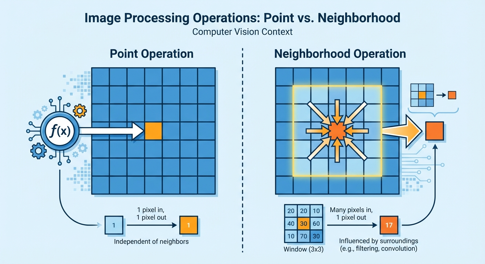

Welcome back! In our previous lessons on Histograms and Gamma Correction, we treated every pixel like an island. We changed a pixel's brightness based solely on its own value. If a pixel was dark, we brightened it. It didn't matter if that pixel was part of a cat's eye or a plain white wall.
But here is the problem: images are not just bags of isolated pixels. They have structure. To see an edge, a texture, or a pattern, you need to know what is happening next to a pixel.
Think about it: An 'edge' is only an edge because the pixel on the left is dark and the pixel on the right is bright. This brings us to a major paradigm shift in Computer Vision: Context is King.
To process this structure, we move from Point Operations to Neighborhood Operations.
Instead of looking at just one pixel \(s(x,y)\), we look at that pixel plus its neighbors. This usually means a small square region, like a \(3 \times 3\) or \(5 \times 5\) grid.
So, how do we combine a pixel with its neighbors mathematically? We use a special tool called a Kernel (or Filter).
A Kernel is simply a small matrix of numbers—weights—that tells us how important each neighbor is. To apply this kernel to an image, we use an operation called Convolution.
A small matrix (usually square with odd dimensions like 3x3) containing numerical weights used to extract features from an image.
The math might look intimidating at first, but it's just a structured way of multiplying and adding. Here is the formula for calculating a new pixel value \(s_a(x, y)\) based on an input image \(s_e\) and a kernel \(h\):
$$ s_a(x, y) = \frac{1}{N} \sum_{u=0}^{m-1} \sum_{v=0}^{m-1} s_e(x + k - u, y + k - v) \cdot h(u, v) $$
Don't panic! Let's break that down. The double summation symbols (\(\sum\)) just mean "loop over the rows and columns of the kernel."
We place the kernel over the image so its center aligns with the pixel we want to change. Then, we multiply the kernel values by the image values underneath them and add everything up. This process is called the Sliding Window approach.
The process of moving the kernel over every pixel of the input image, one by one, to perform the convolution operation.
The best way to understand this is to see it in action. Imagine a transparency sheet with numbers written on it (the kernel) sliding over a grid of numbers (the image).
Notice that for every single pixel in the output image, we have to do 9 multiplications and additions (for a \(3 \times 3\) kernel).
You might have noticed the \(\frac{1}{N}\) in the formula. This is the Normalization Factor.
Usually, \(N\) is the sum of all the weights in the kernel.
$$ N = \sum_{u=0}^{m-1} \sum_{v=0}^{m-1} h(u, v) $$
Why do we divide by \(N\)? Imagine a kernel full of \(1\)s. If we add up 9 white pixels (value 255), the sum would be \(2295\). That's way above the maximum pixel value of 255! Dividing by 9 brings the average back into the correct range.
Let's crunch the numbers manually for one pixel to make sure we've got it. We will use a standard \(3 \times 3\) 'Box Blur' kernel where every weight is \(1\).
Imagine a \(3 \times 3\) patch of the image where the center pixel is 85, surrounded by some black pixels (\(0\)) and white pixels (\(255\)).
To calculate the new value for the center pixel:
1. Multiply: Pair every kernel value with the image pixel underneath. Since the kernel is all \(1\)s, we just take the pixel values.
2. Sum: \(0 + 0 + 0 + 0 + 85 + 255 + 0 + 255 + 255 = 850\)
3. Normalize: Divide by \(N=9\).
$$ s_a(1,1) = \frac{850}{9} \approx 94 $$
So, the pixel changed from 85 to 94. It got a bit brighter because it 'absorbed' some brightness from its white neighbors.
A value (N) used to scale the result of the convolution, typically the sum of the kernel weights, ensuring the output pixel values remain within a valid range (e.g., 0-255).
We typically use kernels with odd dimensions, like \(3 \times 3\), \(5 \times 5\), or \(7 \times 7\).
Before we wrap up, let's test your knowledge on the mechanics of convolution.
Let's try one more calculation.
No, the kernel weights (the numbers inside the kernel matrix) stay constant during the entire convolution operation for a single image. The only thing that changes is which image pixels are currently 'underneath' the kernel.
Great job! You've learned the fundamental operation of computer vision. To summarize:
But wait—what happens when the kernel slides to the very edge of the image and hangs off the side? We'll solve that mystery in the next lesson!